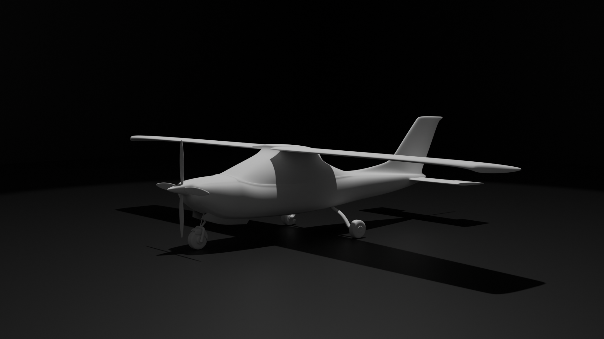
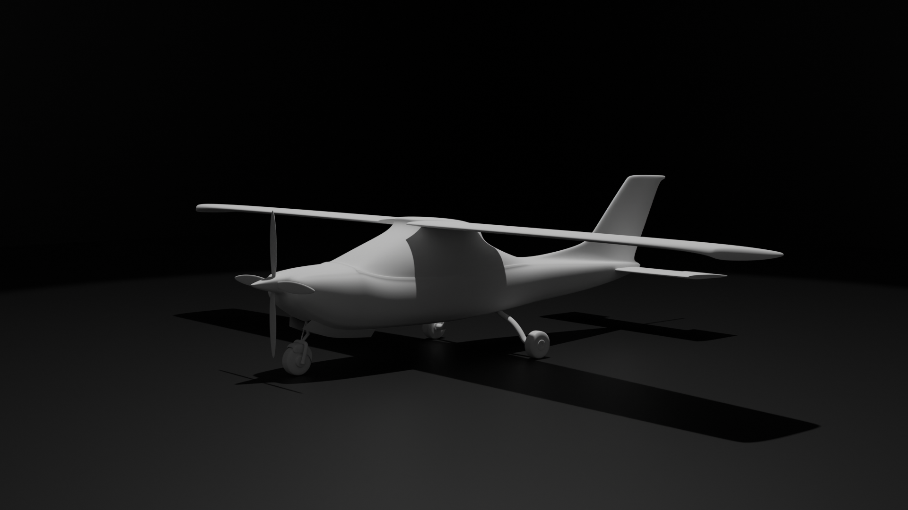

Avioneta modelado semi realista


 

En este modelado el objetivo era crear una avioneta lo máa realista posible
aunque el resultado me gustó no logré conseguir que se viera realista y se quedó
en un terminó medio, además de que texturizar mucho me trae luego problemas
al renderizar.
Este modelado lo hice en Blender.